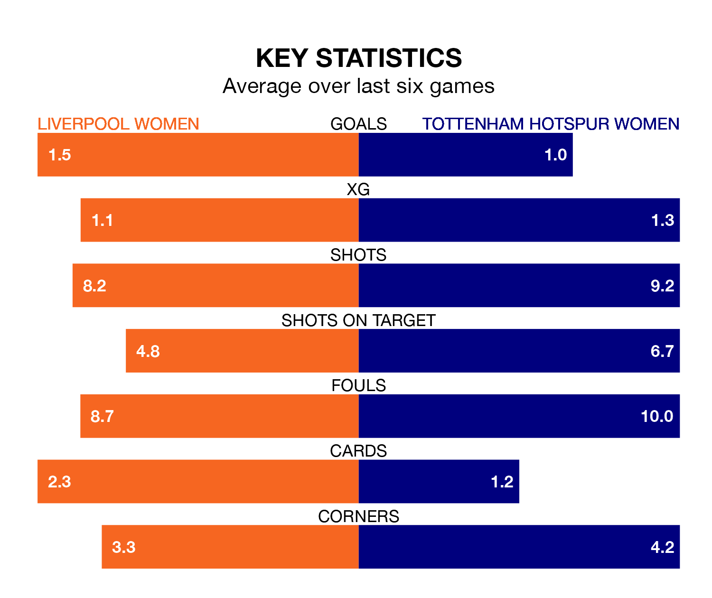

Liverpool Women host Tottenham Hotspur Women on Sunday at Prenton Park in FA Women's Super League.
In their last league match, on January 28, Liverpool lost to Arsenal Women 2-0 at home.
Tottenham Hotspur also lost, 2-0 at home against Manchester City Women.
With 16 goals in 12 games so far this season, Liverpool are scoring at below the league average rate with 1.3 goals per game. But they are conceding fewer than average too, letting in 18 goals at a rate of 1.5 per game.
Tottenham Hotspur are also below average scorers, with 1.6 goals per game, compared to a league average of 1.7. They have conceded 2.1 goals per game.
In Martha Thomas, Spurs have one of the league's sharpest shooters so far this season. She has notched seven goals in 12 appearances, to sit fourth in the scoring charts.
The hosts' top scorers, with three goals each, are Sophie Roman Haug and Marie Therese Höbinger.
In the last five years, Liverpool and Tottenham Hotspur have played each other on five occasions. Liverpool won one of them, Tottenham Hotspur three, and they drew once.
On average, Liverpool scored 0.6 goals and Spurs 1.0 in those matches.
Their last meeting was on November 12, when they played out a 1-1 draw.
Liverpool are in mixed form in FA Women's Super League, with two wins and a draw from their last six games.
And also with two wins and a draw over that period, the away side's form is identical – they have both taken seven points from 18.
Liverpool are fifth in the table after 12 games, of which they have won five and drawn three, earning 18 points.
Tottenham Hotspur are one place behind the home team in sixth, with five wins and three draws putting them on the same number of points.
Updated: 15:45 (UTC), 02/02/24